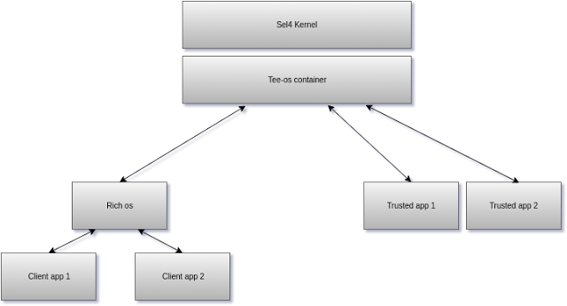

Architecture independant Trusted Execution Environment based the seL4 microkernel
I applied to the prestigious Google Summer of Code program for the second time in 2016, this time with the open source organization lowRISC, who pioneers in the manufacturing process of low cost mass produced RISC-V architecture based SoC's. Google Project Link
I was mentored by Stefan Wallentowitz of lowRISC and also Hesham Almatery who had experience in seL4 and RISC-V. I was tasked to build a TEE for the RISC-V platform. The platform still being in infancy has a lot of environemnts to be desired for.
Architecture
seL4 is a formally verified kernel with complete end to end proofs, therefore it is suitable for building a system which can be trusted.

The seL4 kernel provides very limited functionality like IPC's and memory management in accordance to microkernel design, which is the reason for its secure nature.
seL4 kernel:
The sel4 kernel provides basic functionality like IPC and memory management. It also allows two threads/processes to be completely isolated with the concept of capability spaces.
Tee-os container: This is the root task of the system, this is loaded first and basically spawns the rich-os and Trusted applications in separate isolated threads. It allows manages communicated between the client and the trusted app.
Rich-OS: rich os is an operating system with a wealth features eg. Linux, Android. For the sake if this project the rich-os is just a simple stub os. This is preferably virtualized in the real world. A hypervisor would sit above this level in that case.
Client App: The client app is the client facing part of the application It is started in the rich-os , it makes use of tee_client_api to communicate with the Trusted application/tee-container.
Trusted Application: The trusted application sits in an isolated container and has access to the tee_internal_api to communicate with the tee-container/client app and the tee_crpyto_api which provides cryptographic operations.
Features
This section will explain the features of TEE-OS. The design principles and features have been heavily inspired by OPTEE-OS and are in compliance with the GlobalPlatform standard for TEE's. The process of writing client and secure apps for seL4 TEE-OS is very similar to OPTEE-OS. A number of functions need to be implemented on both the components and function names and TA names are provided in config files.
void encrypt(char *arr){
uint8_t key[16];
uint8_t plaintext[16];
uint8_t ciphertext[16];
int param_len = strlen(arr);
char plaintext_string[16 * ceil_num(param_len/16.0)];
strcpy(plaintext_string,arr);
for(int i= strlen(arr); i < strlen(plaintext_string);++i){
plaintext_string[i] = 0;
}
AES128_STRING_parse(key_string, key);
AES128_STRING_parse(plaintext_string, plaintext);
AES128_ECB_encrypt(plaintext, key, ciphertext);
strcpy(arr,ciphertext);
int i,j=0;
for (i = 0; i < 16; i++){
sprintf(arr+j,"%02x", ciphertext[i]);
j+=2;
}
}
void decrypt(char *arr){
uint8_t key[16];
uint8_t plaintext[16];
uint8_t ciphertext[16];
int param_len = strlen(arr);
char plaintext_string[16 * ceil_num(param_len/16.0)];
strcpy(plaintext_string,arr);
for(int i= strlen(arr); i < strlen(plaintext_string);++i){
plaintext_string[i] = 0;
}
AES128_STRING_parse(key_string, key);
AES128_STRING_parse(plaintext_string, plaintext);
AES128_ECB_decrypt(plaintext, key, ciphertext);
strcpy(arr,ciphertext);
int i,j=0;
for (i = 0; i < 16; i++){
sprintf(arr+j,"%02x", ciphertext[i]);
j+=2;
}
}
//Every ta must have a function handler.
tee_result function_handler(int msg, int func_id ,seL4_Word* param_arr,int length){
if(func_id == HELLO_TA_INCREMENT ){
return tee_make_result(increment(msg),NULL,0);
}else if(func_id == HELLO_TA_DECRYPT){
char *temp = (char *)param_arr;
decrypt(temp);
return tee_make_result(0,temp,length * sizeof(seL4_Word));
}
else if(func_id == HELLO_TA_ENCRYPT){
char *temp = (char *)param_arr;
encrypt(temp);
return tee_make_result(0,temp,length * sizeof(seL4_Word));
}else if(func_id == HELLO_TA_DECRYPT){
char *temp = (char *)param_arr;
decrypt(temp);
return tee_make_result(0,temp,length * sizeof(seL4_Word));
}
else{
return tee_ta_failure();
}
}
The function handler is similar to the OPTEE entry point function, It calls respective functions based on ID. Some features of TEE-OS are:
- Multiple TA support.
- Cryptographic library with AES and hash algorithms
- Multiple function call interface
- Portable to other architectures
- Runs on RISC-V (experimental)
Important Links